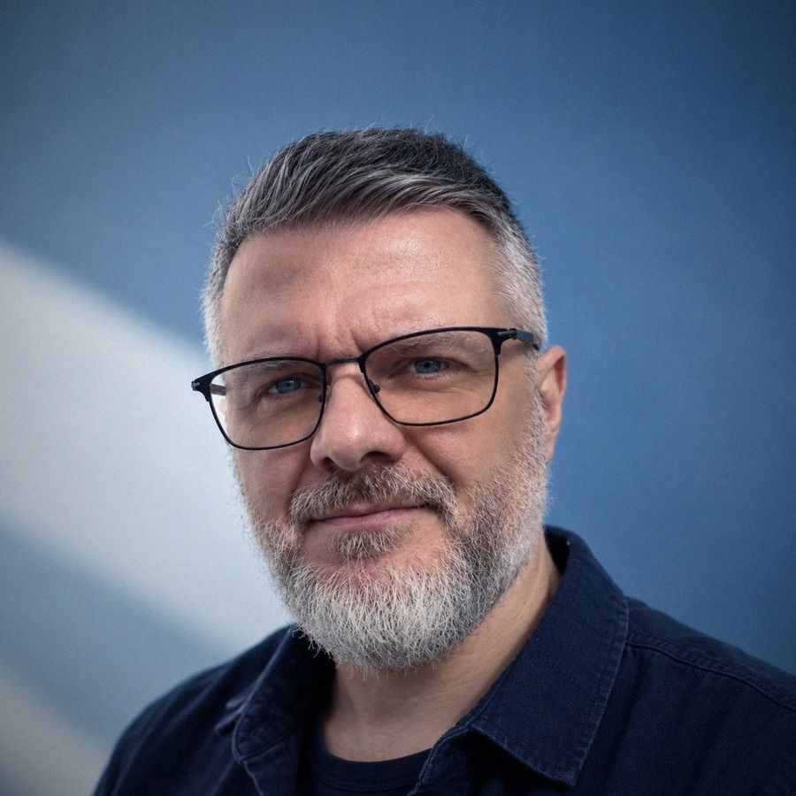

Les 10 habitudes
Un face-caméra tourné avec deux caméras. J’ai coupé les longueurs, ajouté une carte animée par habitude, les titres et le sound design : 6 min 50 au final.
YOUTUBE · SHORTS · PUBLICITÉS
Tes spectateurs partent avant la 10ᵉ seconde ? On commence par là.
Tu m’envoies tes rushs, je monte, je relis tout : tu publies sans y passer tes soirées.

TU TE RECONNAIS ?
Tu m’envoies tes rushs. Je te rends une vidéo prête à publier.
Je choisis les passages forts et la première phrase de ta vidéo.
Montage, son, sous-titres et animations : je m’en occupe.
On fixe la date ensemble : tu sais quand tu pourras publier.
AVANT / APRÈS
Tire la ligne sur la vidéo. À gauche, le rush avant étalonnage. À droite, après mon montage : longueurs retirées, recadrage, petites animations, son et images travaillés.
Extrait de « Les 10 habitudes » · même prise, avant et après montage.
YOUTUBE · FORMATS COURTS · PUBLICITÉS
Quelques montages à découvrir.
Choisis une vidéo pour la regarder.
PORTFOLIO
Montages réalisés sur des rushs fournis par Split Editor.
Choisis une vidéo pour la regarder.
MÉTHODE
Ton activité, ton public et ce que ta vidéo doit lui transmettre.
Les passages à garder, les idées à illustrer et le style de ta vidéo.
Et les animations utiles pour expliquer tes idées.
Des ajustements précis, et une vidéo prête à publier.
QUI S’OCCUPE DE TES VIDÉOS ?
Jérôme Haim · HAIMCUTJ’y ai encadré une équipe de détenus au travail. J’y ai appris à prendre des responsabilités et à organiser le travail dans un contexte exigeant.
Aujourd’hui, je m’intéresse à ce que tu proposes et aux clients que tu veux toucher. Je te suggère des accroches, des passages à garder et des façons d’expliquer tes idées. Tu gardes ta voix et ton style.
Des propositions concrètes. Une accroche à tester, un extrait à publier, un schéma pour expliquer.
Un délai fixé ensemble. Tu sais quand tu reçois ta vidéo et quand me faire tes retours.
Tu valides le résultat. On ajuste les passages à revoir, avec des retours précis sur la vidéo.
ESSAI
On échange sur ton activité et tes besoins. Puis je monte un premier format court, tiré d’une de tes vidéos.
S’il ne te plaît pas, on s’arrête là, sans rien te devoir.
FAQ
Oui. On part de tes vidéos, de ton public et de tes références. Je te propose des idées, tu valides le style avant qu’on avance.
Tes rushs ou ta vidéo existante, ce que tu veux en faire et les éléments de ta marque si tu en as. On précise ensemble ce qui manque au premier échange.
On fixe la date avant de commencer, selon le format et le travail à prévoir. Tu sais quand regarder la première version et me transmettre tes retours.
Ça dépend de la durée, du nombre de vidéos et des animations à prévoir. On en parle à partir de ton besoin, puis je te propose un devis.
Oui. Je sélectionne les passages qui peuvent se regarder seuls et je les adapte au format court vertical (9:16), avec le contexte nécessaire et des sous-titres.
CONTACT
Pour parler de ton activité,
de tes contenus et de ce que tu veux publier.